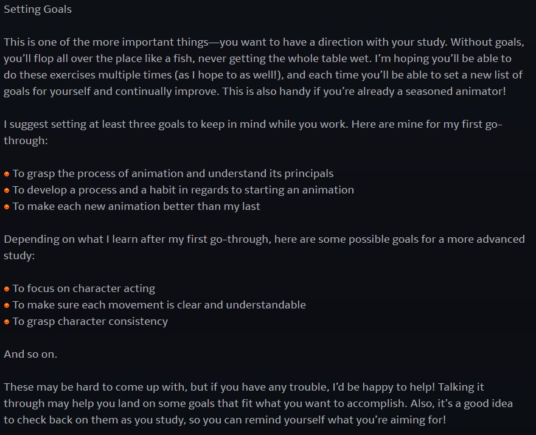

Learn Animation
DeviantArt Group

Learn Animation was a self-made project I put together as I was finishing my English degree and learning my job at 21CLS. I had always wanted to be an animator, but life circumstances made that path difficult. I decided to teach myself, and in doing so, I put together a DeviantArt group with the hope of finding collaborators.
Responsibilities: Analysis, instructional design, implementation
Target Audience: Artists on DeviantArt who wanted to teach themselves animation
Tools Used: Microsoft Office, DeviantArt Groups
Client: None, this was not done for profit
Process
I based this study on Disney's 12 Principles of Animation. They served as my learning objectives. They are outlined in the book the Illusion of Life by Frank Thomas and Ollie Johnston. I chose to complete the study in 24 weeks, which would give me 2 weeks to complete each animation project.
Using the skills I picked up at 21CLS in how to find good online resources, I scoured the internet and began writing up a manuscript that included links to videos and articles that described each specific principal.
Designing the Study
I designed the study based around my own methods for self-learning, which were supplemented by my work with 21CLS at the time. My methods included research, where I looked up the skills taught at top universities. I found these skills by looking at the course descriptions required in their curriculum. I took notes on the skills deemed "required," and then dedicated myself to a consistent period of study (24 weeks in this case).
I built each week around a set of online resources and videos on the subject of each animation principle. They were compiled by using websites and YouTube tutorials available at the time. I cited each source correctly following APA style mostly to practice what I was learning at 21CLS.
Here is how the study broke down:
- Weeks 1 and 2: Squash and Stretch
- Weeks 3 and 4: Anticipation
- Weeks 5 and 6: Staging
- Weeks 7 and 8: Straight Ahead and Pose to Pose
- Weeks 9 and 10: Follow-Through and Overlap
- Weeks 11 and 12: Slow Out and Slow In
- Weeks 13 and 14: Arcs
- Weeks 15 and 16: Secondary Action
- Weeks 17 and 18: Timing
- Weeks 19 and 20: Exaggeration
- Weeks 21 and 22: Drawing
- Weeks 23 and 24: Appeal
Being a child of the online world, I also used the emojis and formatting options available within DeviantArt to make the posts lively and interesting.

Conclusion
The study attracted over 500 members and multiple submissions a week. We didn't ever meet face-to-face, but we chatted through comments, and I eventually added the (brand new at the time) Discord server. The group petered out when I became unable to engage with it due to life struggles, but it still sits in my heart as a wonderful project.
Creating this study not only helped cement my new job in my mind, it also helped me learn animation! I learned how to manage a large project, utilizing a unique platform, and gearing it toward the users of that platform. If I were to redo this study today, I would implement a weekly voice chat so that members would have a recurring forum in which to participate.